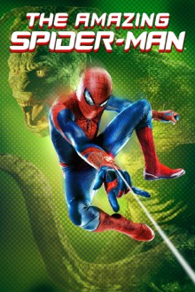
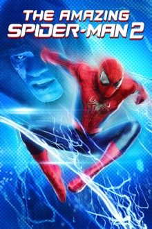

The second theatrical run of Spider-Man is The Amazing Spider-Man ran from 2012 to 2014 and spanned two movies. In these films, Spider-Man is played by Andrew Garfield and the films are directed by Marc Webb. One of the major differences between this series of movies and the 2000’s run is the love interest of Gwen Stacy compared to the original Mary Jane (MJ).
Quick Facts:
Commentary:
Unfortunately, it is a common sentiment in the Spider-Man fandom that the Amazing Spider-Man movies are the weakest of the movie franchises and, I can’t help but agree with the masses. I wouldn’t go as far as calling them absolute garbage, but they definitely have their flaws. Overall, Andrew Garfield does a decent job portraying the superhero, and the effects are actually pretty good, but they start to fall flat in terms of writing and general enjoyment of the films. On top of that, the absolutely vile way they kill Gwen Stacy in the second movie is enough to scare anyone away from these movies.